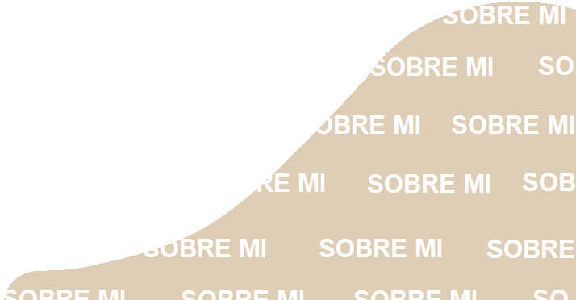

! Llegaste a mi sitio web !
y aquí va mi presentación...

M
i nombre es Daniela Jurado Blandón, mi tarjeta de identificación dice que tengo 18 años pero... creo que tengo el alma de una ancianita, quiero comerme el mundo como la mayoria de los jovenes y todas mis preguntas son como las de un niño pequeño. Soy tan colombiana como el café y tan paisa como el frijol. ¡Ah! este último es mi comida favorita.
Mi papá me llama “Luzcuz” y mi mamá todas las mañanas me levanta con mimos y morisquetas. También soy la
hermana mayor de la persona más importante en mi vida.
Me gustaría escribir todas mis cosas favoritas pero sería una ENORME lista, entonces las resumiré en :
Escuchar, Aprender y Sentir.
Con relación a cosas favoritas, estudio ingeniería informatíca y es la primera gran puerta en la que
entré
para nunca dejar de aprender y sé que despues de pasarla no hay vuelta atrás, porque ¿vale la pena andar
por
el mundo sin las ganas desmedidas de descubrir lo micro y lo macro?, yo digo que no.
Soy muy sensible, curiosa y apasionada por mis ideas. Además soy fiel creyente del poder de las
palabras,
por eso procuro ser muy cuidadosa con lo que sale de mi boca.
Cuando decidí tomar papel y lápiz para hacer este espacio me pregunté por qué las personas crean sus
sitios
web y por qué yo quiero hacerlo también. No fue difícil encontrar una respuesta y es precisamente por
eso,
para crear, crear y volver a crear. Entonces fue una razón suficiente para sacarle punta al lápiz y
comenzar
a rayar.
El mundo es de las mentes inquietas ¿no crees? y no me refiero solo a quienes crean un sitio web, sino a
todas esas personas que se levantan con un querer o deseo diferente y con muchos sueños más para
comenzar a
materializar.
Luego, también me pregunté cuál era el propósito y que aportaría esta pequeñita parte del internet.
Claramente es compartir todos mis proyectos e ideas y sinceramente no busco que sea un sitio exclusivo y
que
marque la diferencia entre los millones de sitios web existentes, porque diferente ya es, diferentes son
y
somos ya todos y todas.
Así que no siendo más... al final de esta introducción esta tu tiquete te vuelo con destino a todas mis
ideas, parchate*, leeme y cliquea todo esto.
Estaba olvidando algo.
Ella es Dionej un personaje que creé para que te acompañe en muchos de
los contenidos que tenemos
para ti.
RECLAMAR MI TIQUETE
*Parchate: coloquialismo paisa para referirse a estar o ponerse comodo, tranquilo y dispuesto a pasarla bien.